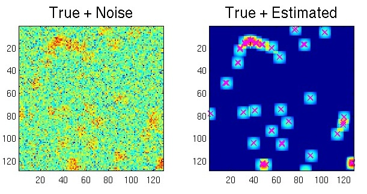
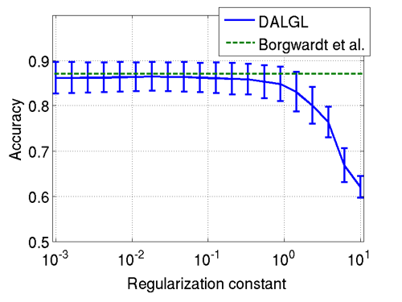
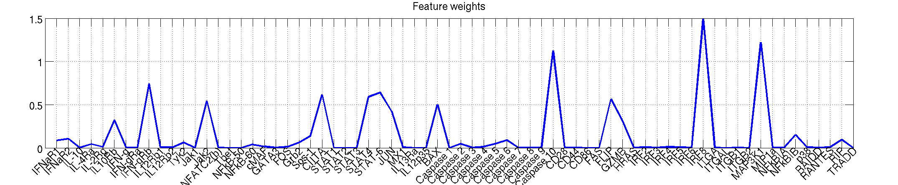
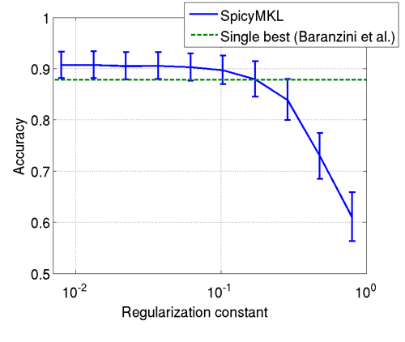
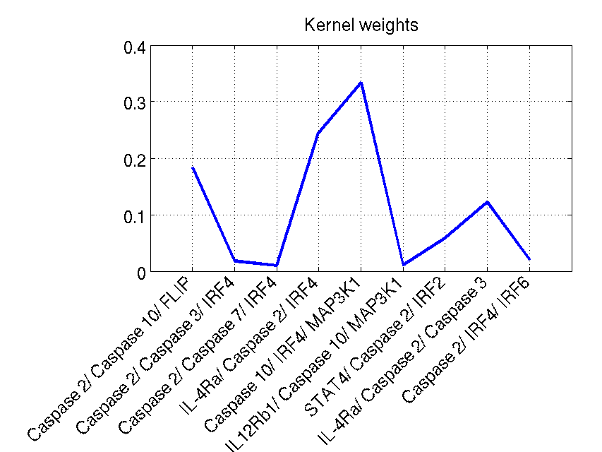
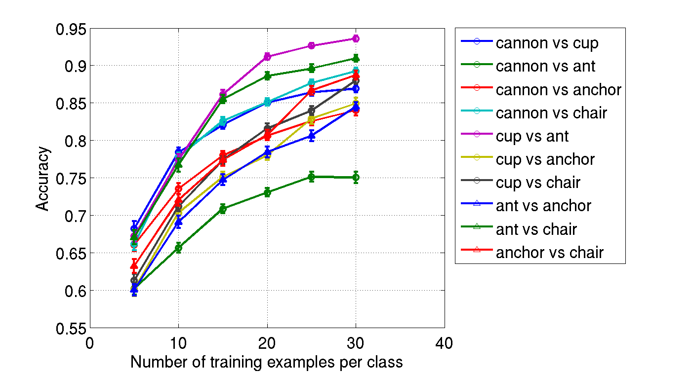

MATLABによるスパース正則化／信号復元のデモンストレーション
冨岡 亮太，鈴木 大慈，杉山 将
スライドはこちらです
ダウンロード
使用方法
- ファイルを解凍して下さい．
- 解凍すると以下のようなディレクトリ構造をしています．
demo/demo1/ : 信号復元のデモです．
demo2/ : バイオインフォマティクスのデモです．
demo3/ : 画像認識のデモです．
dal/ : スパース正則化のツールボックスです．
SpicyMKL/ : マルチカーネル学習のツールボックスです．
- デモを実行するにはそれぞれ demo1.m, demo21.m, demo22.m, demo3.mを実行して下さい．
さらに詳しい情報はこちらをごらん下さい．
お願い
このソフトウェアはMITライセンスに基づいて配布しています．著作権の表示を記載すれば，再利用は自由です．ただし，このソフトウェアを利用して得られた成果を発表する場合は，参考文献[1,2,9]のいずれかを引用して下さい．
フィードバック
質問，感想，その他ありましたらぜひお寄せ下さい． tomioka mist.i.u-tokyo.ac.jp
mist.i.u-tokyo.ac.jp
1. 信号復元
- 実行方法
demo/demo1/に移動してdemo1.mを実行して下さい．- 説明
-
ノイズの中に埋もれ，ぼかしのかかったスパースな信号を見つけ出します．ここで最適化問題は
と書かれ，x は真のスパースな画像，b は観測されたノイズを含む画像，
A は画素数x画素数次元の行列でぼかしの畳み込み行列です．
λは正則化定数で，ノイズやぼかしの強さによって適切に選ぶ必要があ
りますが，下の例ではλ=0.005としています．

上の図では左に観測画像 b，左に（ぼかされた）真の画像と推定されたの信号の位置を重ねて表示しています．この画像は 128x128 なので，x は 16,384 次元ですが，我々が提案する Dual Augmented Lagrangian (DAL) 法[2]を用いると2秒程度（Core2duo 1.86GHz）で解を得ることができます．
2. バイオインフォマティクス
多発性硬化症に対するインターフェロン療法(rIFNβ)の有効性を遺伝子発現データから予測する判別問題です[3]．52人の患者の70の遺伝子の発現量が最長2年間に渡って測定されました．52人のうちの33人がインターフェロン療法が有効，19人が無効で，これを教師あり，2値判別の問題として扱います．
2.1 時系列の情報を用いる
- 実行方法
demo/demo2/に移動してdemo21.mを実行して下さい．- 説明
- ここでは Borgwardt ら[4] の問題設定に即して，すべての時間点を用いて，遺伝子発現の時系列から治療の有効性を予測する問題を考えます．70個の遺伝子について，測定期間を通した平均発現量，発現量の1階差分の平均，2階差分の平均を計算し，3x70次元の特徴ベクトルを得ます．ここではグループラッソー[5]を使って，治療の有効性を予測しうる遺伝子を選択する問題を考えます．具体的には最適化問題は
と書け,ここで はロジスティック損失関数（例えば[6]を参照）で判別問題としては標準的なものです．また，xiは上述の3x70次元の特徴ベクトル，yiは+1，-1のどちらかの値を取り，治療が有効か，無効かを表すラベル，w は xi と同次元の重みベクトル，wjは j 番目の遺伝子に対応する w の3次元の部分ベクトル，b はバイアス項とします．m はサンプルの数です．正則化項がノルムの（2乗和ではなく）線形和であることに注意して下さい．

上の最初の図は100回の 4-fold cross-validation に基づく予測精度です．時系列の情報を，平均，1階差分，2階差分に落とし込むという単純な方法で Borgwardt らの Dynamical Systems Kernel とほぼ同程度の精度が得られます．また，次の図に示すように，スパースな正則化を用いることで，予測に有用な遺伝子（の組）を見つけることができます．この図では70個の遺伝子について対応する3次元部分ベクトル wj のノルム（cross-validation による平均）を表示しています．我々が提案するDAL法[1,2]を用いると20個の正則化定数λの候補に対する 1回の 4-fold cross-validation が約27.6秒（Core2duo 1.86GHz）で計算できます．
2.2 遺伝子の組み合わせを探す
- 実行方法
-
demo/SpicyMKL/に移動してsetup.mを実行して下さい．（エラーが出る場合）demo/demo2/に移動してdemo22.mを実行して下さい．
- 説明
-
Baranzini ら [3] は治療の有効性を予測しうる3つの遺伝子の組み合わせを探し，例えば {Caspase 2, Caspase 10, FLIP} の組み合わせで Quadratic Discriminant Analysis を行うと，時刻0（治療開始時）のデータだけから，87.8% の予測精度を達成できることを示しました．ここでは彼らが有効だと示した9つの3つ組にそれぞれ2次の多項式カーネルを導入して，9つの情報源と見なし，これをマルチカーネル学習 (MKL) （例えば[7,8]） を用いて最適に組み合わせる問題を考えます．2.1 節とは時系列の情報を扱わない代わりに遺伝子の間の非線形な関係を扱っている点で異なることに注意して下さい．具体的には以下の最適化問題を解きます：
ここで，n=9 はカーネルの数とします． は αj を係数とする j 番目の関数のノルムです．カーネル行列 Kj が導入されているのを無視すれば，この最適化問題は 2.1 で扱った最適化問題と同じ形をしていることに注意して下さい．

上の最初の図は100回の 4-fold cross-validation に基づく予測精度です．1つの3つ組を用いるより，複数の3つ組をMKLを用いて組み合わせた方が精度がよくなることがわかります．次の図は，MKL が選んだカーネル重みで，cross-validation の結果の平均です．我々が提案している SpicyMKL 法（DAL を MKL に拡張したもの）[1,9]を用いると，10個の正則化定数の候補に対する1回の4-fold cross-validation が約7.3秒（Core2duo 1.86GHz）で計算できます．
3. CV
- 実行方法
-
demo/SpicyMKL/に移動してsetup.mを実行して下さい．（エラーが出る場合）- データ（計算済みカーネル行列）をダウンロードして
demo/demo3/において下さい．（実行したい2クラスの組み合わせだけで大丈夫です．）
demo/demo3/に移動してdemo3.mを実行して下さい．
- 説明
-
Caltech 101[10]というベンチマークデータを用いた画像認識のデモです．ここでは，anchor（例題数42），ant（例題数42），cannon（例題数43），chair（例題数62），cup（例題数57）の5つのクラスを用いて，10通りの2クラス判別問題を作りマルチカーネル学習の実験を行います．カーネルとしては，まず，van de Sande ら[11]の特徴抽出アルゴリズムを用いてひとつひとつの画像を Bag-of-visual-words として表現し，いくつかのあらかじめ決められた（階層構造をなす）矩形領域[12]における visual words の出現頻度（ヒストグラム）を特徴ベクトルとします．これらの特徴ベクトルをガウシアンカーネルあるいは χ2カーネル関数に代入して，内積値を得ます．特徴抽出法としては，hsvsift, sift（スケール自動）, sift（スケール4pxで固定），sift（スケール8pxで固定）の4種類を用いました．特徴抽出法（4通り），それを統合する矩形領域（画像全体，4分割，16分割，およびそれらを[12]の提案する重みで統合したものの22通り），カーネル関数（2つのカーネル関数を，それぞれ10通りのパラメータで適用）の組み合わせによりカーネルが得られるため，最終的なカーネルの数は1,760個となります．
各クラスに含まれる画像の例．

ここでは10通りの2クラスの組み合わせについて，それぞれのクラスからランダムに同数の画像を選び訓練用画像として，残りの画像をテスト用としました．上の図はこのようなテストを100回行った際の平均予測精度を示しています（ここでは正則化定数λ=0.01で固定しています）．我々が提案している SpicyMKL 法[1,9]を用いると1クラスあたりのサンプル数が15，カーネル数1,760のとき，2.2秒（Core2Duo 1.86GHz）で1回の最適化をすることができます．
参考文献
- スパース正則化およびマルチカーネル学習のための最適化アルゴリズムとCV・PRへの応用 (特別講演), 冨岡亮太, 鈴木大慈, 杉山将,
信学技報, 109(182), PRMU2009-63, 43--48 (2009)
- Dual Augmented Lagrangian Method for Efficient Sparse Reconstruction", Tomioka, R. and Sugiyama, M.,
IEEE Signal Processing Letters (2009) Accepted.
- Transcription-Based Prediction of Response to IFNβ Using Supervised Computational Methods, Baranzini, S.E., Mousavi, P., Rio, J., Caillier, S.J., Stillman, A., et al., PLoS Biology 3(1) (2005).
- Class Prediction From Time Series Gene Expression Profiles Using Dynamical Systems Kernels, Borgwardt, K.M., Vishwanathan, S.V.N., & Kriegel, H.-P., Pac Symp Biocomput. 547-58 (2006).
- Model selection and estimation in regression with grouped variables, Yuan, M. and Lin, Y., Journal of the Royal Statistical Society Series B 68(1) 49--67 (2006).
- Pattern Recognition and Machine Learning, Bishop C.M. (2006). [日本語訳：パターン認識と機械学習（シュプリンガージャパン）]
- Learning the kernel matrix with semidefinite programming,
Lanckriet, G.R.G., Cristianini, N., Bartlett, P., El Ghaoui, L., Jordan, M.I.,
JMLR 5, 27--72 (2004)
-
Multiple kernel learning, conic duality, and the SMO algorithm,
Bach, F.R., Lanckriet, G.R.G., and Jordan, M.I.,
In Proc. ICML 2004 (2004).
- SpicyMKL, Suzuki, T. & Tomioka, R., arXiv:0909.5026.
- Learning generative visual models
from few training examples: an incremental Bayesian approach tested on
101 object categories,
Fei-Fei, L., Fergus, R., and Perona, P., IEEE. CVPR 2004, Workshop on Generative-Model Based Vision. (2004). [ウェブページ]
-
Evaluation of Color Descriptors for Object and Scene Recognition, van de Sande, K.E.A., Gevers, T., & Snoek, C.G.M., Proc. of CVPR. (2008). [ソフトウェア]
- Beyond bags of
features: Spatial pyramid matching for recognizing natural
scene categories, Lazebnik, S., Schmid, C., & Ponce, J. In IEEE CVPR (2006).